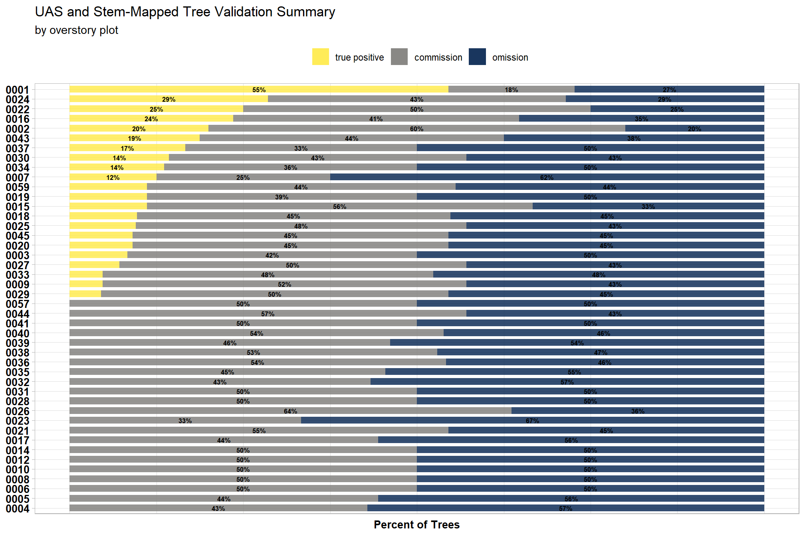
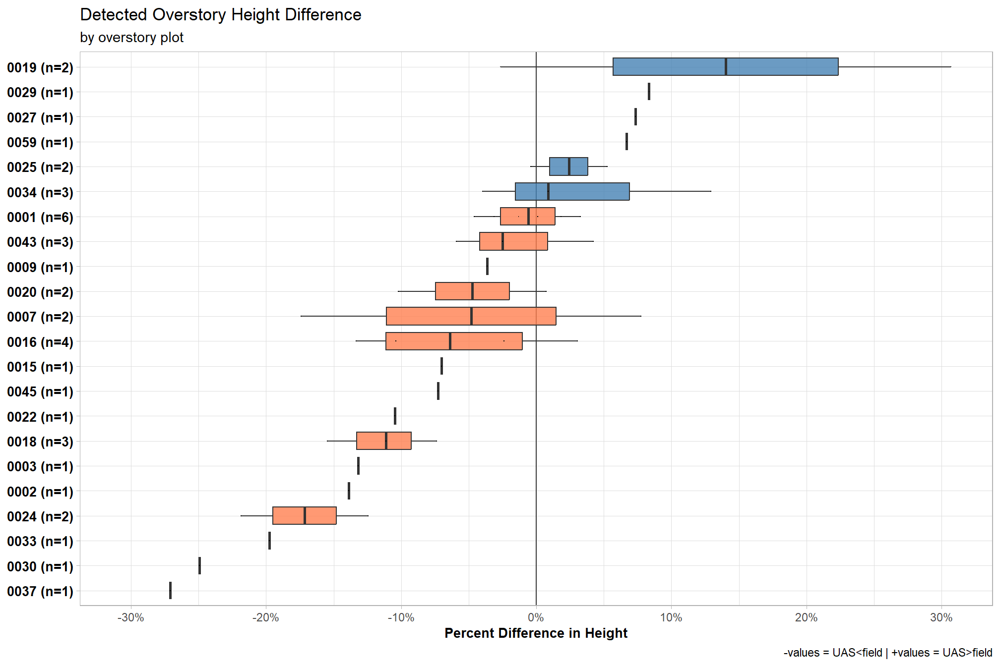
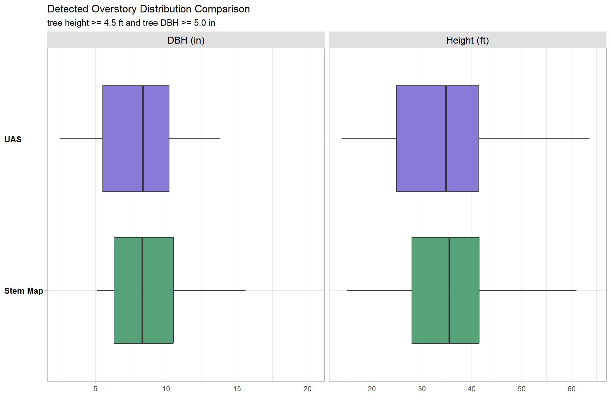

Section 7 Field Validation Data
Tinkham and Swayze (2021; p.6) describe a methodology for matching UAS detected trees with stem mapped trees identified via traditional field survey methods. Note, detected trees in the excerpt below references UAS detected trees while survey trees references field-based stem mapped trees:
Each of the detected tree outputs was matched with survey tree locations through an iterative process. Iteratively, a detected tree was selected, and all survey trees within a 3 m radius and 10% height of the detected tree were identified. If a survey tree met both the location and height precision requirements, it was considered a true positive (TP) detection, and both the survey and detected trees were removed from further matching. However, if no match was made, the detected tree was considered a commission (Co) and removed from further matching. This process was repeated until all detected trees were classified as true positive or commission, with all unmatched survey trees classified as omission (Om). Overall tree detection performance was described using the F-score metric.
The F-score incorporates true positive, commission, and omission rates to determine how well the UAS detected trees represent the field-based stem mapped trees. As a measure of predictive performance, the highest possible value of an F-score is 1.0, indicating perfect precision and recall, and the lowest possible value is 0, if either precision or recall are zero.
\[ \textrm{F-score} = 2 \times \frac{\bigl(\frac{TP}{TP+Om} \times \frac{TP}{TP+Co} \bigr)}{\bigl(\frac{TP}{TP+Om} + \frac{TP}{TP+Co} \bigr)} \]
The process to match UAS detected trees to field stem mapped trees implemented here is slightly different than the process described above. To match the data parametrization from the UAS point cloud processing workflow, only stem-mapped trees above 2 m were considered for analysis. Each UAS detected tree was matched with stem-mapped tree locations that were within a 3 m radius and 10% height of the UAS detected tree. The matched UAS and stem-mapped tree pairs were jointly compared (rather than iteratively) to select the pair that minimized the height difference for both the stem-mapped tree and the UAS detected tree to ensure that only one UAS detected tree was selected for each stem-mapped tree. If more than one UAS detected tree had the same height difference to a stem-mapped tree, the UAS detected tree spatially nearest to the stem-mapped tree was selected as the match. These UAS detected trees with a paired stem-mapped tree after this filtering process were considered true positive (\(TP\)) detections.
To determine UAS detected tree commissions (i.e. UAS detected trees within the overstory plot for which there was no stem-mapped tree pair; \(Co\)) this analysis used the 2023-06 BHEF overstory field survey plot center and plot radius expanded for the mean distance error across all UAS and stem-mapped tree pairs (i.e. \(TP\) detections). UAS detected trees within this adjusted radius that did not have a matched stem-mapped tree pair were considered commissions (\(Co\)). The 2023-06 BHEF field surveys used \(\frac{1}{10}\) acre (404.686 m2) plots with a 37.24 ft (11.35 m) radius for overstory sampling and \(\frac{1}{400}\) acre (10.117 m2) plots with a 5.89 ft (1.795 m) radius for regeneration sampling. All unmatched stem-mapped survey trees were classified as omissions (\(Om\)).
7.1 Load Field Data
Load the overstory data, set parameters for processing, and map
##################################################################################################
## USER DEFINED PARAMETERS
##################################################################################################
### True tree file to only include trees above a specific height
min_tree_height_m = min(chm_rast %>% terra::values(), na.rm = T)
### Find all nearest neighbors within maximum distance and then filter them based on
### distance and height error
max_dist_m = 3
max_height_error_pct = 0.1
##################################################################################################
## USER DEFINED PARAMETERS
##################################################################################################
# load Field Validation Data
field_overstory = readr::read_csv(
file = "../data/field_data/Voodoo_overstory_data.csv"
) %>%
dplyr::rename_with(~ .x %>%
# replace all non alphanumeric with _
stringr::str_replace_all("[^[:alnum:] ]+", "_") %>%
# remove any _ at the end of the string
stringr::str_remove("[_]$") %>%
tolower()
) %>%
dplyr::filter(
!is.na(tree_diameter_inches)
& !is.na(tree_height_feet)
& !is.na(tree_utm_x)
& !is.na(tree_utm_y)
) %>%
dplyr::mutate(
field_dbh_cm = tree_diameter_inches/0.394
, field_tree_height_m = tree_height_feet/3.281
, field_plottree_id = paste0(
stringr::str_pad(plot_id, width = 4, side = "left", pad = "0")
, "-"
, stringr::str_pad(tree_id, width = 4, side = "left", pad = "0")
)
) %>%
dplyr::filter(field_tree_height_m >= min_tree_height_m) %>%
dplyr::rename(
field_dbh_in = tree_diameter_inches
, field_tree_height_ft = tree_height_feet
) %>%
sf::st_as_sf(
coords = c("tree_utm_x", "tree_utm_y")
, crs = sf::st_crs(treetops_sf_with_dbh)
, remove=F
) %>%
# keep only tree points that are within the uas flight boundary
sf::st_intersection(las_ctg_dta)
# field_overstory %>%
# sf::st_drop_geometry() %>%
# dplyr::summarize(n = dplyr::n(), unique_tree = dplyr::n_distinct(field_plottree_id))## Rows: 368
## Columns: 26
## $ plot_id <dbl> 43, 32, 18, 19, 38, 43, 18…
## $ observers_on_plot <chr> "HK,TD,VH,CM", "VH,HK,CM,T…
## $ collection_date <chr> "6/6/2023 18:00", "6/8/202…
## $ comments_on_plot_condition_or_abnormalities <chr> NA, NA, NA, NA, NA, NA, NA…
## $ x <dbl> -103.6168, -103.6362, -103…
## $ y <dbl> 44.14265, 44.14125, 44.144…
## $ tree_id <dbl> 1, 1, 1, 1, 1, 2, 2, 1, 1,…
## $ species <chr> "Pinus ponderosa", "Pinus …
## $ tree_condition <chr> "Live", "Live", "Live", "L…
## $ field_dbh_in <dbl> 9.3, 5.3, 9.3, 10.5, 5.2, …
## $ tree_distance_from_plot_center_ft <dbl> 13.0, 19.0, 36.7, 16.5, 6.…
## $ azimuth_to_tree_degrees <dbl> 1, 2, 3, 5, 6, 7, 8, 12, 1…
## $ field_tree_height_ft <dbl> 40.5, 28.0, 34.0, 48.0, 17…
## $ tree_crown_base_height_feet <dbl> 11.5, 12.0, 7.0, 13.0, NA,…
## $ tree_remarks <chr> NA, NA, NA, NA, "Broken to…
## $ parentglobalid <chr> "bd4bdd71-588e-4d4a-b255-0…
## $ uniqueid <chr> "bd4bdd71-588e-4d4a-b255-0…
## $ ba <dbl> 0.4717165, 0.1532029, 0.47…
## $ utm_x <dbl> 610631.4, 609087.3, 608962…
## $ utm_y <dbl> 4888644, 4888472, 4888774,…
## $ tree_utm_y <dbl> 4888648, 4888478, 4888786,…
## $ tree_utm_x <dbl> 610631.5, 609087.5, 608963…
## $ field_dbh_cm <dbl> 23.60406, 13.45178, 23.604…
## $ field_tree_height_m <dbl> 12.343798, 8.533984, 10.36…
## $ field_plottree_id <chr> "0043-0001", "0032-0001", …
## $ geometry <POINT [m]> POINT (610631.5 4888…Overstory field data map
field_overstory %>%
sf::st_drop_geometry() %>%
dplyr::distinct(plot_id, utm_x, utm_y) %>%
sf::st_as_sf(coords = c("utm_x", "utm_y"), crs = sf::st_crs(treetops_sf_with_dbh)) %>%
sf::st_buffer(11.35) %>%
dplyr::mutate(x=1) %>%
mapview::mapview(col.regions = "blue", layer.name = "plot", alpha.regions = 0.6) +
mapview::mapview(field_overstory, col.regions = "orange", cex = 2, layer.name = "trees") +
mapview::mapview(
harvests
, color = "black"
, lwd = 3
, alpha.regions = 0
, label = FALSE
, legend = FALSE
, popup = FALSE
)7.2 Build UAS-Field Validation Data
7.2.1 True Positive Identification
The UAS detected and stem-mapped tree pairs identified in this filtering process (detailed above) were considered true positive (\(TP\)) detections.
## BUFFER THE UAS TREES AND SPATIALLY MATCH FIELD TREES BASED ON THAT BUFFER
## get FIELD trees within radius OF UAS TREES
potential_tree_pairs_temp = treetops_sf_with_dbh %>%
dplyr::select(treeID, tree_height_m) %>%
# buffer point
sf::st_buffer(max_dist_m) %>%
# spatial join with all FIELD tree points
sf::st_join(
field_overstory %>%
dplyr::filter(field_tree_height_m >= min_tree_height_m) %>%
dplyr::select(
field_plottree_id, field_tree_height_m
, tree_utm_x, tree_utm_y
)
, join = st_intersects
, left = F # performs inner join to only keep uas trees with a match
) %>%
# calculate height difference
dplyr::mutate(
height_diff_pct = abs(tree_height_m-field_tree_height_m)/field_tree_height_m
) %>%
# removes tree pairs that are outside of the allowable error
dplyr::filter(height_diff_pct <= max_height_error_pct) %>%
dplyr::relocate(treeID, field_plottree_id)
## apply pair selection criteria if there are potential tree pairs
if(nrow(potential_tree_pairs_temp)>0){
## calculate row by row distances and height differences
potential_tree_pairs_temp = potential_tree_pairs_temp %>%
# this is the position of the uas tree
sf::st_centroid() %>%
sf::st_set_geometry("geom1") %>%
dplyr::bind_cols(
potential_tree_pairs_temp %>%
sf::st_drop_geometry() %>%
dplyr::select("tree_utm_x", "tree_utm_y") %>%
# this is the position of the field tree
sf::st_as_sf(
coords = c("tree_utm_x", "tree_utm_y"), crs = sf::st_crs(treetops_sf_with_dbh)
) %>%
sf::st_set_geometry("geom2")
) %>%
dplyr::mutate(
distance_m = sf::st_distance(geom1, geom2, by_element = T) %>% as.numeric()
) %>%
sf::st_drop_geometry() %>%
dplyr::select(-c(tree_utm_x, tree_utm_y, geom2))
## define function to select the best tree pair
select_best_tree_pair_fn <- function(df) {
df %>%
dplyr::group_by(field_plottree_id) %>%
dplyr::arrange(field_plottree_id, height_diff_pct, distance_m, desc(tree_height_m), treeID) %>%
dplyr::mutate(
# at the field tree level...the number of field trees
n_uas_trees = dplyr::n()
# at the field tree level...
# the closest uas tree in height tie breaker distance, uas_tree_height_m, id
, rank_within_field_tree = dplyr::row_number()
) %>%
dplyr::group_by(treeID) %>%
dplyr::arrange(treeID, height_diff_pct, distance_m, desc(tree_height_m), field_plottree_id) %>%
dplyr::mutate(
# at the uas tree level...the number of uas trees
n_field_trees = dplyr::n()
# at the field tree level...
# the closest uas tree in height tie breaker distance, uas_tree_height_m, id
, rank_within_uas_tree = dplyr::row_number()
) %>%
dplyr::ungroup() %>%
# select the uas-field tree pair with the minimum height difference
dplyr::filter(
rank_within_field_tree == 1
& rank_within_uas_tree == 1
) %>%
# remove columns
dplyr::select(
-c(tidyselect::starts_with("rank_"), tidyselect::starts_with("n_"))
)
}
## first filter for tree pairs
true_positive_trees = select_best_tree_pair_fn(potential_tree_pairs_temp)
##remove matches from potential tree pairs
potential_tree_pairs_temp = potential_tree_pairs_temp %>%
dplyr::filter(
!(treeID %in% true_positive_trees$treeID)
& !(field_plottree_id %in% true_positive_trees$field_plottree_id)
)
## keep filtering for best pair until no unique pairs remain
while(nrow(potential_tree_pairs_temp)>0) {
# keep filtering for best pair until no unique pairs remain
true_positive_trees = true_positive_trees %>%
dplyr::bind_rows(
select_best_tree_pair_fn(potential_tree_pairs_temp)
)
#remove matches from potential tree pairs
potential_tree_pairs_temp = potential_tree_pairs_temp %>%
dplyr::filter(
!(treeID %in% true_positive_trees$treeID)
& !(field_plottree_id %in% true_positive_trees$field_plottree_id)
)
}
## rename columns and flag
true_positive_trees = true_positive_trees %>%
dplyr::rename(
uas_tree_height_m = tree_height_m
, uas_tree_id = treeID
, field_uas_distance_m = distance_m
) %>%
dplyr::mutate(
field_uas_group = "true positive"
)
}else{ # if there are spatially matched trees
true_positive_trees = dplyr::tibble(
uas_tree_id = as.character(NA)
, field_plottree_id = as.character(NA)
, uas_tree_height_m = as.numeric(NA)
, field_tree_height_m = as.numeric(NA)
, height_diff_pct = as.numeric(NA)
, field_uas_distance_m = as.numeric(NA)
)
}
remove(potential_tree_pairs_temp)
gc()
#check data
true_positive_trees %>%
dplyr::summarise(
n_rows = n()
, unique_uas_trees = n_distinct(uas_tree_id)
, unique_field_trees = n_distinct(field_plottree_id)
, unique_pairs = n_distinct(field_plottree_id, uas_tree_id)
) %>%
kableExtra::kbl(caption = "results of true positive stem-uas tree matching") %>%
kableExtra::kable_styling()7.2.2 Combine with Commission and Omission
To determine UAS detected tree commissions (i.e. UAS detected trees within the overstory plot for which there was no stem-mapped tree pair; \(Co\)) this analysis used the 2023-06 BHEF overstory field survey plot center and plot radius of 11.35 m expanded for the mean distance error (0.98 m) across all UAS and stem-mapped tree pairs (i.e. \(TP\) detections).
Omissions (\(Om\)) are stem-mapped trees without a UAS detected tree match.
field_uas_comparison = dplyr::bind_rows(
## true positive
true_positive_trees
## omission
, field_overstory %>%
sf::st_drop_geometry() %>%
dplyr::select(
plot_id, field_plottree_id, field_tree_height_m
) %>%
dplyr::anti_join(
true_positive_trees
, by = dplyr::join_by(field_plottree_id)
) %>%
dplyr::mutate(
field_uas_group = "omission"
)
## commission
, field_overstory %>%
sf::st_drop_geometry() %>%
# get field plot center locations
dplyr::distinct(plot_id, utm_x, utm_y) %>%
sf::st_as_sf(coords = c("utm_x", "utm_y"), crs = sf::st_crs(treetops_sf_with_dbh)) %>%
# buffer plot center with plot area 11.35m radius + mean error in true positive trees
# sf::st_buffer(11.35+mean(true_positive_trees$field_uas_distance_m, na.rm = T)) %>%
# buffer plot center with plot area 11.35m radius
sf::st_buffer(11.35) %>%
# join with uas tree points
sf::st_join(
treetops_sf_with_dbh %>%
dplyr::filter(!treeID %in% true_positive_trees$uas_tree_id) %>%
dplyr::select(treeID) %>%
dplyr::rename(uas_tree_id=treeID)
, join = st_intersects
) %>%
sf::st_drop_geometry() %>%
dplyr::mutate(
field_uas_group = "commission"
)
) %>%
# attach uas data
dplyr::left_join(
treetops_sf_with_dbh %>%
sf::st_drop_geometry() %>%
dplyr::select(treeID, tree_height_m, dbh_cm) %>%
dplyr::rename(
uas_tree_id = treeID
, uas_tree_height_m = tree_height_m
, uas_dbh_cm = dbh_cm
)
, by = dplyr::join_by(uas_tree_id)
) %>%
# attach field data
dplyr::left_join(
field_overstory %>%
sf::st_drop_geometry() %>%
dplyr::select(field_plottree_id, field_tree_height_m, field_dbh_cm, plot_id)
, by = dplyr::join_by(field_plottree_id)
) %>%
# update data
dplyr::mutate(
uas_tree_height_m = uas_tree_height_m.y
, field_tree_height_m = field_tree_height_m.y
, plot_id = dplyr::coalesce(plot_id.x, plot_id.y)
, field_uas_group = factor(
field_uas_group
, ordered = T
, levels = c(
"true positive"
, "commission"
, "omission"
)
) %>% forcats::fct_rev()
, dbh_diff_cm = uas_dbh_cm - field_dbh_cm
, tree_height_diff_m = uas_tree_height_m - field_tree_height_m
, dbh_diff_pct = dbh_diff_cm/field_dbh_cm
, height_diff_pct = tree_height_diff_m/field_tree_height_m
, abs_dbh_diff_pct = abs(dbh_diff_pct)
, abs_height_diff_pct = abs(height_diff_pct)
, plot_lab = stringr::str_pad(plot_id, width = 4, side = "left", pad = "0")
) %>%
dplyr::relocate(field_uas_group) %>%
dplyr::select(-c(tidyselect::ends_with(".x"), tidyselect::ends_with(".y"))) %>%
# convert to imperial units
calc_imperial_units_fn()
## write
write.csv(field_uas_comparison, paste0(delivery_dir,"/field_uas_comparison_data.csv"), row.names = F)
## aggregate data to plot level
field_uas_comparison_plot =
field_uas_comparison %>%
dplyr::count(plot_id, plot_lab, field_uas_group) %>%
dplyr::group_by(plot_id, plot_lab) %>%
dplyr::mutate(
pct = n/sum(n)
, tot = sum(n)
, tp_pct=max(ifelse(field_uas_group=="true positive",pct,0))
) %>%
dplyr::ungroup() %>%
# attach f score
dplyr::inner_join(
field_uas_comparison %>%
dplyr::count(plot_id, field_uas_group) %>%
dplyr::mutate(field_uas_group = dplyr::case_when(
field_uas_group == "true positive" ~ "tp"
, field_uas_group == "commission" ~ "co"
, field_uas_group == "omission" ~ "om"
)) %>%
tidyr::pivot_wider(
names_from = field_uas_group
, values_from = n
, values_fill = 0
) %>%
dplyr::mutate(
plot_f_score = dplyr::coalesce(
2 * ( (tp/(tp+om)) * (tp/(tp+co)) ) / ( (tp/(tp+om)) + (tp/(tp+co)) )
, 0
)
) %>%
dplyr::select(plot_id, plot_f_score)
, by = dplyr::join_by(plot_id)
)7.3 Summary of Validation Data
7.3.1 True Positive, Commission, Ommission
Summary of tree true positive (\(TP\)), commission (\(Co\)), and omission (\(Om\)) detection by BHEF overstory plot.
field_uas_comparison_plot %>%
ggplot() +
geom_col(
mapping = aes(x = pct, y = reorder(plot_lab, tp_pct), fill=field_uas_group)
,width = 0.7, alpha=0.8
) +
geom_text(
mapping = aes(x = pct, y = reorder(plot_lab, tp_pct), group=field_uas_group
,label = scales::percent(ifelse(pct>=0.12,pct,NA), accuracy = 1)
, fontface = "bold"
)
, position = position_stack(vjust = 0.5)
, color = "black", size = 2.3
) +
scale_fill_viridis_d(option = "cividis") +
scale_x_continuous(labels = scales::percent_format()) +
labs(
fill = ""
, y = ""
, x = "Percent of Trees"
, title = "UAS and Stem-Mapped Tree Validation Summary"
, subtitle = "by overstory plot"
) +
theme_light() +
theme(
legend.position = "top"
, legend.direction = "horizontal"
, legend.title = element_text(size=7)
, axis.title.x = element_text(size=10, face = "bold")
, axis.title.y = element_blank()
, axis.text.x = element_blank()
, axis.text.y = element_text(color = "black",size=10, face = "bold")
, axis.ticks.x = element_blank()
) +
guides(
fill = guide_legend(reverse = T, override.aes = list(alpha = 0.9))
) 
7.3.2 F-score
field_uas_comparison_plot %>%
dplyr::distinct(plot_lab, plot_f_score) %>%
ggplot(
mapping = aes(x = plot_f_score, y = reorder(plot_lab, plot_f_score), fill=plot_f_score, label = scales::comma(plot_f_score, accuracy = 0.01))
) +
geom_vline(
xintercept = field_uas_comparison_plot %>% dplyr::distinct(plot_lab, plot_f_score) %>%
dplyr::pull(plot_f_score) %>% median()
, color = "gray44"
, linetype = "dashed"
) +
geom_col(
width = 0.7, alpha=0.8
) +
geom_text(
color = "black", size = 3.5
, hjust = -0.1
) +
annotate(
"text"
, x = field_uas_comparison_plot %>% dplyr::distinct(plot_lab, plot_f_score) %>%
dplyr::pull(plot_f_score) %>% median()
, y = 0
, label = paste0(
"median: "
, field_uas_comparison_plot %>% dplyr::distinct(plot_lab, plot_f_score) %>%
dplyr::pull(plot_f_score) %>% median() %>% scales::comma(accuracy = 0.01)
)
, hjust = -0.1
, vjust = -1
) +
scale_fill_viridis_c(option = "mako", direction = -1) +
labs(
fill = ""
, y = ""
, x = "F-Score"
, title = "UAS and Stem-Mapped Tree F-Score Summary"
, subtitle = "by overstory plot"
) +
theme_light() +
theme(
legend.position = "none"
, axis.title.x = element_text(size=10, face = "bold")
, axis.title.y = element_blank()
, axis.text.x = element_blank()
, axis.text.y = element_text(color = "black",size=10, face = "bold")
, axis.ticks.x = element_blank()
)7.3.3 Detected Overstory (\(TP\)) Height Difference
Detected overstory tree (\(TP\)) height reliability
field_uas_comparison %>%
dplyr::filter(field_uas_group == "true positive") %>%
dplyr::group_by(plot_lab) %>%
dplyr::mutate(
reorder_y = median(height_diff_pct, na.rm=T)
, color_box = reorder_y<0
, n_rows = dplyr::n()
, plot_lab = paste0(
plot_lab
," (n=", scales::comma(n_rows,accuracy=1),")"
)
) %>%
ggplot(mapping = aes(x = height_diff_pct, y = reorder(plot_lab, reorder_y) )) + # height_diff_pct
geom_vline(xintercept = 0, color = "gray22") +
geom_boxplot(mapping = aes(fill = color_box), alpha = 0.8, width = 0.7, outlier.shape = NA) +
scale_fill_manual(values = c("steelblue", "coral")) +
geom_point(color = "black", shape = ".") +
scale_x_continuous(
labels = scales::percent_format()
, breaks = scales::extended_breaks(n=8)
, limits = c(
-max(field_uas_comparison$abs_height_diff_pct, na.rm = T)
, max(field_uas_comparison$abs_height_diff_pct, na.rm = T)
)
) +
labs(
fill = ""
, y = ""
, x = "Percent Difference in Height"
, title = "Detected Overstory (>2m) Height Difference"
, subtitle = "by overstory plot"
, caption = "-values = UAS<field | +values = UAS>field"
) +
theme_light() +
theme(
legend.position = "none"
, axis.title.x = element_text(size=10, face = "bold")
, axis.title.y = element_blank()
, axis.text.y = element_text(color = "black",size=10, face = "bold", hjust = 0)
)
7.3.4 Detected Overstory (\(TP\)) DBH Difference
Detected overstory tree (\(TP\)) DBH reliability
field_uas_comparison %>%
dplyr::filter(field_uas_group == "true positive") %>%
dplyr::group_by(plot_lab) %>%
dplyr::mutate(
reorder_y = median(dbh_diff_pct, na.rm=T)
, color_box = reorder_y<0
, n_rows = dplyr::n()
, plot_lab = paste0(
plot_lab
," (n=", scales::comma(n_rows,accuracy=1),")"
)
) %>%
ggplot(mapping = aes(x = dbh_diff_pct, y = reorder(plot_lab, reorder_y) )) + # dbh_diff_pct
geom_vline(xintercept = 0, color = "gray22") +
geom_boxplot(mapping = aes(fill = color_box), alpha = 0.8, width = 0.7, outlier.shape = NA) +
scale_fill_manual(values = c("steelblue", "coral")) +
geom_point(color = "black", shape = ".") +
scale_x_continuous(
labels = scales::percent_format()
, breaks = scales::extended_breaks(n=8)
, limits = c(
-max(field_uas_comparison$abs_dbh_diff_pct, na.rm = T)
, max(field_uas_comparison$abs_dbh_diff_pct, na.rm = T)
)
) +
labs(
fill = ""
, y = ""
, x = "Percent Difference in DBH"
, title = "Detected Overstory (>2m) DBH Difference"
, subtitle = "by overstory plot"
, caption = "-values = UAS<field | +values = UAS>field"
) +
theme_light() +
theme(
legend.position = "none"
, axis.title.x = element_text(size=10, face = "bold")
, axis.title.y = element_blank()
, axis.text.y = element_text(color = "black",size=10, face = "bold", hjust = 0)
)
7.3.5 Detected Overstory (\(TP\)) Reliability
dbh_f_temp = field_uas_comparison %>% dplyr::filter(field_uas_group=="true positive") %>% dplyr::pull(field_dbh_in)
dbh_u_temp = field_uas_comparison %>% dplyr::filter(field_uas_group=="true positive") %>% dplyr::pull(uas_dbh_in)
ht_f_temp = field_uas_comparison %>% dplyr::filter(field_uas_group=="true positive") %>% dplyr::pull(field_tree_height_ft)
ht_u_temp = field_uas_comparison %>% dplyr::filter(field_uas_group=="true positive") %>% dplyr::pull(uas_tree_height_ft)
data.frame(
mae_dbh = Metrics::mae(
dbh_f_temp
, dbh_u_temp
)
, mape_dbh = Metrics::mape(
dbh_f_temp
, dbh_u_temp
)
, rmse_dbh = Metrics::rmse(
dbh_f_temp
, dbh_u_temp
)
## height
, mae_height = Metrics::mae(
ht_f_temp
, ht_u_temp
)
, mape_height = Metrics::mape(
ht_f_temp
, ht_u_temp
)
, rmse_height = Metrics::rmse(
ht_f_temp
, ht_u_temp
)
) %>%
tidyr::pivot_longer(dplyr::everything()) %>%
tidyr::separate_wider_delim(cols = name, delim = "_", names = c("error", "metric")) %>%
tidyr::pivot_wider(names_from = error, values_from = value) %>%
dplyr::mutate(
metric = dplyr::case_when(
metric == "dbh" ~ "DBH (in)"
, metric == "height" ~ "Height (ft)"
)
, n = field_uas_comparison %>% dplyr::filter(field_uas_group=="true positive") %>% nrow()
) %>%
kableExtra::kbl(
caption = "Detected overstory (>2m) tree height and DBH prediction performance"
, col.names = c(
" "
, "Mean Abs. Error"
, "Mean Abs. Percent Error"
, "Root Mean Squared Error"
, "N"
)
, digits = 2
) %>%
kableExtra::kable_styling()| Mean Abs. Error | Mean Abs. Percent Error | Root Mean Squared Error | N | |
|---|---|---|---|---|
| DBH (in) | 1.38 | 0.15 | 1.88 | 293 |
| Height (ft) | 1.08 | 0.03 | 1.40 | 293 |
7.3.6 Detected Overstory (\(TP\)) Distribution Comparison
field_uas_comparison %>%
dplyr::filter(field_uas_group=="true positive") %>%
dplyr::select(c(
tidyselect::ends_with("_dbh_in")
, tidyselect::ends_with("_height_ft")
)) %>%
dplyr::rename_with(
.fn = function(x){dplyr::case_when(
stringr::str_ends(x,"_dbh_in") ~ stringr::str_replace(x,"_dbh_in","_dbh")
, stringr::str_ends(x,"_tree_height_ft") ~ stringr::str_replace(x,"_tree_height_ft","_height")
, TRUE ~ x
)}
) %>%
tidyr::pivot_longer(dplyr::everything()) %>%
tidyr::separate_wider_delim(
cols = name
, delim = "_"
, names = c("source", "metric")
) %>%
dplyr::mutate(
metric = dplyr::case_when(
metric == "dbh" ~ "DBH (in)"
, metric == "height" ~ "Height (ft)"
)
, source = dplyr::case_when(
source == "uas" ~ "UAS"
, source == "field" ~ "Stem Map"
)
, n = field_uas_comparison %>% dplyr::filter(field_uas_group=="true positive") %>% nrow()
) %>%
ggplot(mapping = aes(x = value, y = source )) +
geom_boxplot(mapping = aes(fill = source), alpha = 0.8, width = 0.7, outlier.shape = NA) +
# geom_point(color = "black", shape = ".") +
facet_grid(cols = vars(metric), scales = "free_x") +
scale_fill_manual(values = c("seagreen", "slateblue")) +
labs(
fill = ""
, y = ""
, x = ""
, title = "Detected Overstory (>2m) Distribution Comparison"
) +
theme_light() +
theme(
legend.position = "none"
, axis.title.x = element_text(size=10, face = "bold")
, axis.title.y = element_blank()
, axis.text.y = element_text(color = "black",size=10, face = "bold", hjust = 0)
, strip.text = element_text(color = "black", size = 12)
, strip.background = element_rect(fill = "gray88")
)